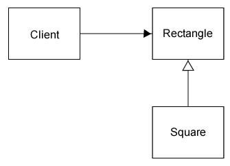

SOLID inheritance
The Liskov Substitution Principle
Created by
Jeroen De Dauw
for Wikimedia Deutschland
Licensed CC BY-SA 3.0
Original definition
If for each object o1 of type S there is an object o2 of type T such that for all programs P defined in terms of T, the behaviour of P is unchanged when o1 is substituted for o2 then S is a subtype of T.


Users expecting a Type can be given a Subtype,
and then use it as a Type without blowing up
All methods need to be there
interface Logger {
public function log( $stuff );
public function notice( $stuff );
public function warning( $stuff );
}
class FooBarLogger implements Logger {
public function log( $stuff ) {}
public function notice( $stuff ) {}
// Who needs warnings anyway?
}
function doStuff( Logger $logger ) {
$logger->warning( 'Stuff is being done. Slack is decreasing' );
}
doStuff( new FooBarLogger() ); // boom
Contract goes beyond type
interface Logger {
public function log( $stuff );
public function notice( $stuff );
public function warning( $stuff );
}
class TwitterLogger implements Logger {
public function log( $stuff ) {
if ( strlen( $stuff ) > 140 ) { throw new NotLspException(); }
}
// ...
}
- Input requirements need to be at least as general
- Output requirements need to be at least as strict
Obvious!
Or not?
The classic example
class Rectangle {
private $width;
private $height;
private $topLeftCorner;
public function getWidth();
public function getHeight();
public function setWidth( $width );
public function setHeight( $height );
public function getArea();
}
Adding Square
What is the relationship?
Square is a rectangle
=> inheritance!
Implementation
class Rectangle {
private $width;
private $height;
private $topLeftCorner;
public function getWidth();
public function getHeight();
public function setWidth( $width );
public function setHeight( $height );
public function getArea();
}
class Square extends Rectangle {}
Too many fields - whatever, enough memory anyway!
But what about setHeight and setWidth?
Width and height need to be the same
Fixing the problem
class Square extends Rectangle {
public function setWidth( $width ) {
$this->width = $width;
$this->height = $width;
}
public function setHeight( $height ) {
$this->width = $height;
$this->height = $height;
}
}
Still somewhat odd
Though behaves like a square
function f( Rectangle $rectangle ) {
$rectangle->setWidth( 10 );
$rectangle->setHeight( 5 );
assert( $rectangle->getArea() === 50 );
}
f( new Square() ); // Boom
Have fun debugging!
Always code as if the person who ends up maintaining your code is a violent psychopath who knows where you live. --John Woods
How to fix this mess?
Fixing the fix new problem
function f( Rectangle $r ) {
if ( $r instanceof Square ) {
// ...
}
else { // Assume we got a Rectangle
// ...
}
}
OCP violation!
f now dependent on Square
Shotgun Surgery
What are boundaries?
Third try is a charm!
Let Rectangle extend Square
class Square {
private $side;
}
class Rectangle extends Square {
private $otherSide;
}
$square->setSide( 5 );
assert( $square->getArea() === 25 ); // boom if $square instanceof Rectangle
The actual solution
Square and Rectangle are different, don't subtype!
Never pass a Square into a method expecting Rectangle
Square is not a Rectangle
WTF?
Squares are not rectangles?!
Yeah, they are rectangles
Contradicting yourself are you?
Squares are rectangles
// This is not a square though
class Square {
// ...
}
It is code that represents a square
Representatives
Do not share the relationships of the things they represent
Integer is a real number
Real number is a complex number
Complex number contains two real number
Makes perfect sense.
Free beer for who implements this and successfully instantiates a complex number
class ComplexNumber {
private $realPart;
private $imaginaryPart;
function __construct( RealNumber $real, RealNumber $imaginary ) {
$this->realPart = $real;
$this->imaginaryPart = $imaginary;
}
public function getRealPart(): RealNumber {
return $this->realPart;
}
public function getImaginaryPart(): RealNumber {
return $this->imaginaryPart;
}
}
class RealNumber extends ComplexNumber {
public function __construct( float $value ) {
parent::__construct(
new RealNumber( $value ),
new RealNumber( 0 )
);
}
}
Class T
Class S extends T
List<S> is not a subtype of List<T>
Cannot pass list<Square> to function expecting list<Shape>
$squares = new List<Square>();
function f( List<Shape> $list ) { /* ... */ }
f( $squares );
function f( List<Shape> $list ) {
$list.add( new Circle() );
}
The relationship is again not carried over
Questions?
These slides: bit.ly/solid-lsp
Cattribution
"WTF cat" by Bjorn Hermans, CC BY-NC-ND 2.0
"Reflection cat" by Nikos Koutoulas, CC BY 2.0
"Questions cat" by Linda Tanner, CC BY 2.0
"Attribution cat" by Florencia Lewis, CC BY 2.0
"The wall" by David R. Tribble, CC BY-SA 3.0
The slides by Jeroen De Dauw, CC BY-SA 3.0